¿Cómo jugar?
 Click izquierdo del ratón
Pulsa la casilla sobre la casillas que te encuentres.
Click derecho del ratón
Coloca una bandera sobre la casilla que te encuentres.
Click izquierdo y derecho del ratón.
(Pulsación larga en caso de usar touchpad)
Intenta descubrir las casillas colindantes, si el número de banderas colindantes coincide con el valor de la casilla pulsada.
 ¿Cuándo gano?
¿Cuándo gano?
Ganarás cuando el número de casillas sin descubrir sea igual al número de minas.
 ¿Cuándo puedo perder?
Puedes perder cuando pulses una casilla que contenga una mina o cuando intentes despejar y el número de banderas no coincida con el valor de la casillaa.